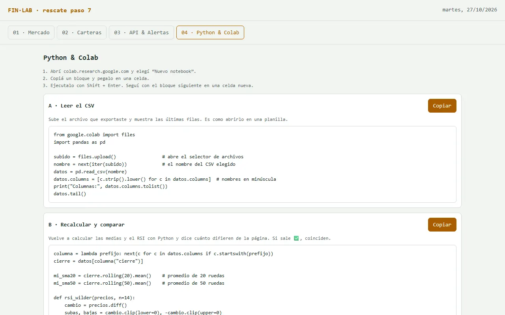

PASO 7 · COLAB
Del CSV a Google Colab: verificar con Python
Recalculen en Colab el CSV del paso 4: si coinciden, el cálculo es confiable.
Una idea nueva: Dos herramientas que dan el mismo número confirman el cálculo. Ejemplo: la SMA20 en Colab y en su página difiere menos de 0,01 (el CSV redondea a dos decimales).
¿Llegan tarde? ⬇ BAJAR EL PUNTO DE PARTIDA (PASO 6)
Qué van a lograr
Un notebook de Colab que lee su CSV con pandas (la librería de Python para tablas) y recalcula los indicadores. Dice cuánto difieren de la página. El bloque A muestra las columnas y 5 filas; el B, esto:
SALIDA ESPERADA · BLOQUE B
Diferencia máxima SMA20: 0.005 Diferencia máxima SMA50: 0.005 Diferencia máxima RSI : 0.005 ✅ La página y Python coinciden (todas las diferencias son menores a 0,01)
Así va quedando
- Esqueleto (ya está)
- Datos (ya está)
- Mercado (ya está)
- Indicadores (ya está)
- Carteras (ya está)
- API (ya está)
- Colab (este paso)
- n8n (todavía no)
- #/guiado (todavía no)
- Clave (todavía no)
- Modelo (todavía no)
- Agente (todavía no)
- Consejo (todavía no)
- MCP (todavía no)

Qué hacer
- Tengan el CSV del paso 4. ¿Sin CSV? ⬇ CSV DE RESPALDO (AAPL)
- Abran colab.research.google.com con su cuenta de Google y elijan Nuevo notebook.
- Peguen los bloques A, B y C de abajo, en ese orden, cada uno en su celda (+ Código). Ejecuten con ▶. En el A, toquen Elegir archivos bajo la celda, suban el CSV y esperen a que termine.
El código para pegar en Colab
BLOQUE A · LEER EL CSV
from google.colab import files
import pandas as pd
subido = files.upload() # abre el selector de archivos
nombre = next(iter(subido)) # el nombre del CSV elegido
datos = pd.read_csv(nombre)
datos.columns = [c.strip().lower() for c in datos.columns] # nombres en minúscula
print("Columnas:", datos.columns.tolist())
datos.tail()BLOQUE B · RECALCULAR Y COMPARAR
columna = lambda prefijo: next(c for c in datos.columns if c.startswith(prefijo))
cierre = datos[columna("cierre")]
mi_sma20 = cierre.rolling(20).mean() # promedio de 20 ruedas
mi_sma50 = cierre.rolling(50).mean() # promedio de 50 ruedas
def rsi_wilder(precios, n=14):
cambio = precios.diff()
subas, bajas = cambio.clip(lower=0), -cambio.clip(upper=0)
g, l = subas.iloc[1:n + 1].mean(), bajas.iloc[1:n + 1].mean() # arranque: promedio simple de 14
rsi = pd.Series(float("nan"), index=precios.index)
rsi.iloc[n] = 100 - 100 / (1 + g / l)
for i in range(n + 1, len(precios)): # después: suavizado de Wilder
g = (g * (n - 1) + subas.iloc[i]) / n
l = (l * (n - 1) + bajas.iloc[i]) / n
rsi.iloc[i] = 100 - 100 / (1 + g / l)
return rsi
mi_rsi = rsi_wilder(cierre)
difs = {
"SMA20": (mi_sma20 - datos[columna("sma20")]).abs().max(),
"SMA50": (mi_sma50 - datos[columna("sma50")]).abs().max(),
"RSI ": (mi_rsi - datos[columna("rsi")]).abs().max(),
}
for nombre_ind, dif in difs.items():
print(f"Diferencia máxima {nombre_ind}: {dif:.3f}")
print("✅ La página y Python coinciden" if max(difs.values()) < 0.01 else "❌ Hay diferencias: revisen la fórmula en la página")BLOQUE C · GRAFICAR
import matplotlib.pyplot as plt
fechas = datos[datos.columns[0]] # la primera columna es la fecha
plt.figure(figsize=(10, 4))
plt.plot(fechas, cierre, label="Cierre")
plt.plot(fechas, mi_sma20, label="SMA20")
plt.plot(fechas, mi_sma50, label="SMA50")
plt.xticks(fechas[::21], rotation=45) # una marca por mes (21 ruedas)
plt.title("Recalculado en Google Colab")
plt.legend()
plt.tight_layout()
plt.show()Cómo comprobar
- El bloque B imprime ✅: todas las diferencias son menores a 0,01.
- El gráfico de Colab se parece al de su terminal.
Si algo falla
Tres intentos y nada: ⬇ BAJAR LA VERSIÓN DE RESCATE
- StopIteration o KeyError: el CSV tiene otras columnas. Pídanle a la IA: “Adaptá este código a un CSV con estas columnas: [la lista que imprime el bloque A]”.
- La diferencia del RSI supera 0,01: pídanle a la IA que corrija la función rsi de su página según el prompt del paso 4. Ahí se pide el promedio simple de 14 al inicio y después el suavizado de Wilder.
- Números como texto o enormes: el CSV usa coma decimal. Agreguen decimal="," dentro de pd.read_csv(...).
- No tienen cuenta de Google: miren el gráfico de abajo y sigan con el paso 8.